Unit 2.5 Muscular System · Day 4 · Thu, Oct 22slide 1 of 23
Objective
Today's goal
Students will be able to describe the structural organization of muscle from smallest to largest level, by building it up one level at a time, so that they can explain how small molecular interactions lead to coordinated movement.
I can describe the structural organization of muscle from smallest to largest level.
I can identify and label connective tissue layers: endomysium, perimysium, and epimysium.
I can differentiate between a muscle fiber, fascicle, and whole muscle.
Language target
I can put the levels of a muscle in order, from smallest to largest.
Unit 2.5 Muscular System · Day 4 · Thu, Oct 22slide 7 of 23
Wrapped in connective tissue
A wrapper at every level
Level wrapped
Connective tissue
Muscle fiber
Endomysium
Fascicle
Perimysium
Whole muscle
Epimysium
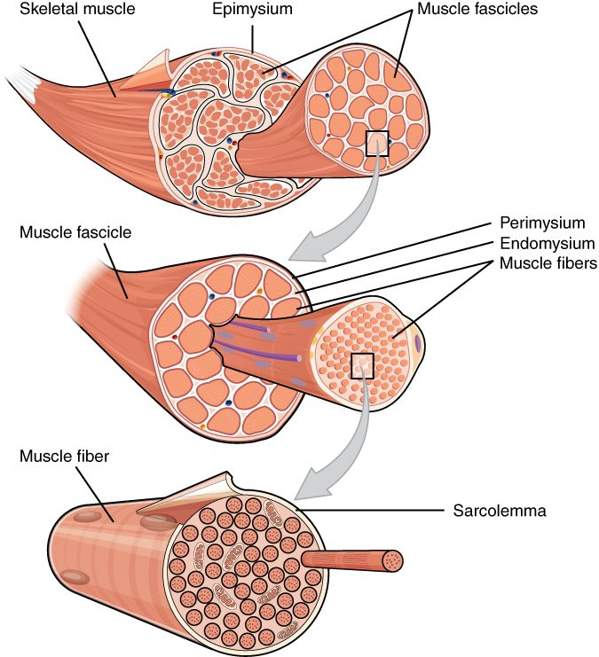
Epimysium, perimysium, and endomysium. OpenStax Anatomy & Physiology, CC BY 4.0.
Unit 2.5 Muscular System · Day 4 · Thu, Oct 22slide 8 of 23
A helpful comparison
Muscle is like a cable
Small wires (myofilaments) form strands (myofibrils), which bundle into cords (fibers and fascicles), which wrap together to form the main cable (whole muscle).
Unit 2.5 Muscular System · Day 4 · Thu, Oct 22slide 9 of 23
Read the diagram
The sarcomere, up close
This OpenStax diagram shows one sarcomere relaxed (top) and contracted (bottom).
Letter A marks a Z-disc.
Letter B marks actin (thin filament, green).
Letter C marks myosin (thick filament, purple).
Line D marks the length of one sarcomere, Z-disc to Z-disc.
Compare: when contracted, the Z-discs move closer and the H zone shrinks, but the filaments keep the same length.
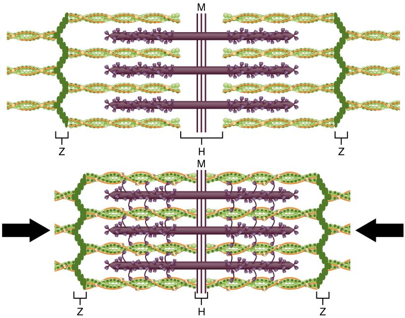
DABC
Sliding filament model, relaxed vs. contracted. OpenStax Anatomy & Physiology, CC BY 4.0 (letters added).
Unit 2.5 Muscular System · Day 4 · Thu, Oct 22slide 10 of 23
Turn and talk
Check your understanding
Order them
Put these in order from smallest to largest: fascicle, myofilament, whole muscle, muscle fiber, myofibril. Then name the connective tissue wrapping the fascicle.
Unit 2.5 Muscular System · Day 4 · Thu, Oct 22slide 11 of 23
Catch the mistake
A classmate's claim
"A fascicle is a bundle of myofibrils."
What is wrong with this claim? What is a fascicle actually a bundle of?
Unit 2.5 Muscular System · Day 4 · Thu, Oct 22slide 12 of 23
Lab · 20 minutes · groups
Muscle-in-Layers Model
Use paper strips as myofilaments and bundle them into a myofibril.
Group myofibrils into a fiber and wrap it (endomysium).
Bundle fibers into a fascicle (perimysium), then fascicles into a muscle (epimysium).
Label each level and explain it to another group.
Materials Paper strips (about 20 per group), yarn or string, tape, markers.
Notebook Lab pages 23–24.
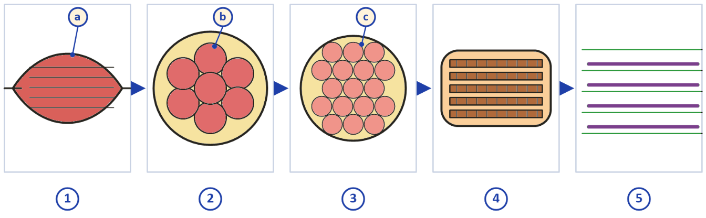
Your notebook diagram (page 23), colored: red = muscle, yellow = connective tissue wrapping.
Unit 2.5 Muscular System · Day 4 · Thu, Oct 22slide 13 of 23
Lab · notebook page 23
Zoom in, panel by panel
Panels 1 to 5 zoom in from the whole muscle down to the filaments. Name each panel, then name the three wrappings (a, b, c).
Unit 2.5 Muscular System · Day 4 · Thu, Oct 22slide 14 of 23
What it really looks like
From notebook to body: panels 1–3
Panel 1 · Whole muscle
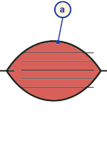
↓ in the body
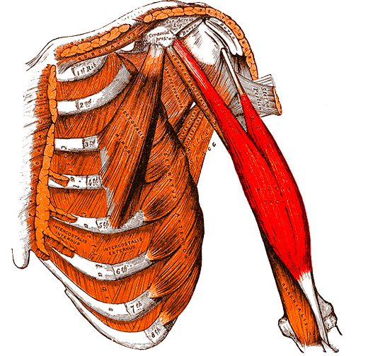
The biceps is one whole muscle, with a tendon at each end. Its outer covering is the epimysium (a).Gray's Anatomy (1918), H. V. Carter, public domain.
Panel 2 · Fascicles
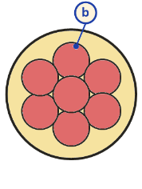
↓ in the body
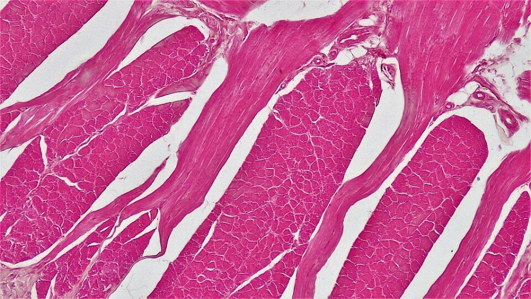
Muscle cut across (100x). Each pink bundle is a fascicle. The pale spaces between bundles hold the perimysium (b).Berkshire Community College Bioscience Image Library, CC0.
Panel 3 · Muscle fibers
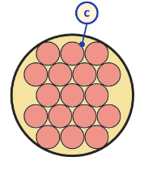
↓ in the body
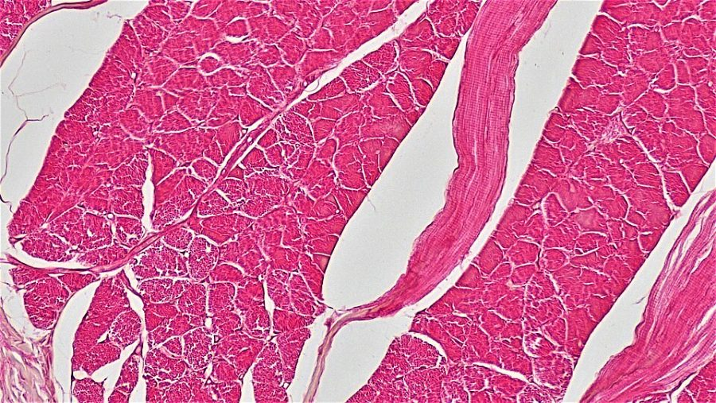
Closer (200x). Each small pink shape is one muscle fiber. The thin lines between fibers are endomysium (c).Berkshire Community College Bioscience Image Library, CC0.
Unit 2.5 Muscular System · Day 4 · Thu, Oct 22slide 15 of 23
What it really looks like
From notebook to body: panels 4–5
Panel 4 · Myofibrils
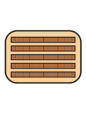
↓ in the body
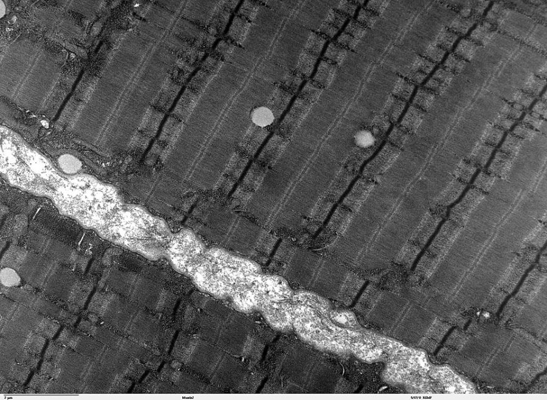
Electron microscope view inside one fiber. The long parallel strands are myofibrils. The dark lines across them are Z-discs, one at each end of a sarcomere.Louisa Howard, Dartmouth Electron Microscope Facility, public domain.
Panel 5 · Myofilaments
↓ in the body
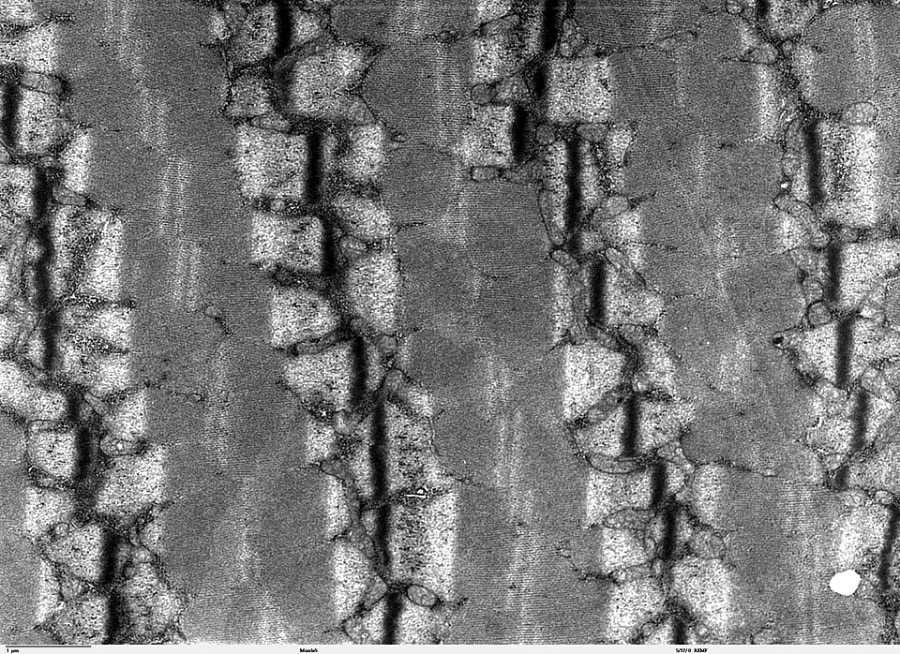
Even closer. The darker A band is where thick myosin filaments overlap actin. The lighter I band holds only thin actin filaments, anchored at the Z-disc.Louisa Howard, Dartmouth Electron Microscope Facility, public domain.
Notice
The notebook drawings are simplified. Real tissue is packed tight and stained pink or gray, but the same pattern repeats at every level: bundles inside bundles, each with its own wrapper.
Unit 2.5 Muscular System · Day 4 · Thu, Oct 22slide 16 of 23
Take the CFA
CFA 1 · Canvas
Now it's your turn
1
Open CFA 1 in Canvas. It covers Days 1–4: functions, muscle types, fiber structure, and levels of organization.
2
Answer from what you know. Read the feedback after each question.
3
It does not count for a grade the way the unit test will. Your score sorts you into a station.
Unit 2.5 Muscular System · Day 4 · Thu, Oct 22slide 17 of 23
If time allows
Groups of five, about 6 minutes
Line up the levels
1
Choose a level. Myofilament, myofibril, muscle fiber, fascicle, or whole muscle.
2
Introduce yourself. Say: I am a ____. I am made of ____.
3
Line up. Stand in order from smallest to largest. Check another group's line.
Do not use your notes until you have lined up once.
Unit 2.5 Muscular System · Day 4 · Thu, Oct 22slide 18 of 23
If time allows
Individual or pairs, about 7 minutes
Build your own cable
1
Choose an object. Pick something made of parts inside parts, such as a rope, a book, or a school.
2
Match it. Name five levels of your object. Match each to a level of muscle.
3
Check the wrappers. Name what wraps a fiber, a fascicle, and a whole muscle.
Draw and label if you prefer.
Unit 2.5 Muscular System · Day 4 · Thu, Oct 22slide 19 of 23
After the notes
Mark, link, ask
1
Mark. Underline, circle, or highlight the main ideas in your notes.
2
Link. Connect one idea in your notes to something outside your notes.
3
Ask. Write one quiz question that your notes can answer and that could be on a test.
Unit 2.5 Muscular System · Day 4 · Thu, Oct 22slide 20 of 23
Summarize
How does a muscle build up from tiny filaments to a whole muscle?
Muscle is built in five levels. Myofilaments form myofibrils, myofibrils fill a muscle fiber, fibers bundle into fascicles, and fascicles make up the whole muscle. Endomysium, perimysium, and epimysium wrap the fiber, the fascicle, and the whole muscle.
Unit 2.5 Muscular System · Day 4 · Thu, Oct 22slide 21 of 23
Take-home message and exit ticket
Before you leave
Take-home message
Tiny events add up. Many small sliding events at every level produce one coordinated movement.
Write in your notebook
The sarcomere is the basic unit of contraction. Name the five levels of skeletal muscle structure in order, smallest to largest, and circle the one wrapped in perimysium.
Record today's warm-up and exit ticket on your weekly page. It is turned in on Fridays.
Unit 2.5 Muscular System · Day 4 · Thu, Oct 22slide 22 of 23
Credits
Image and content credits
Sarcomere (lesson): David Richfield, "Sarcomere.svg," CC BY-SA 3.0. Sliding filament diagram, myofibril and connective-tissue figures: OpenStax, Anatomy and Physiology, CC BY 4.0 (letters A–D added).
Muscle fiber: Blausen.com staff, "Medical gallery of Blausen Medical 2014," CC BY 3.0. Micrograph: Nephron, CC BY-SA 3.0. Muscle structure: NCI SEER Training Modules, public domain.
Lab: biceps from Gray's Anatomy (1918), public domain; light micrographs, Berkshire Community College Bioscience Image Library, CC0; electron micrographs, Louisa Howard, Dartmouth, public domain. Lab diagram from the Unit 2.5 notebook, colored for this deck. All via Wikimedia Commons.
Content follows the Unit 2.5 notes, which cite OpenStax Anatomy and Physiology (CC BY 4.0).
Unit 2.5 Muscular System · Day 4 · Thu, Oct 22slide 23 of 23